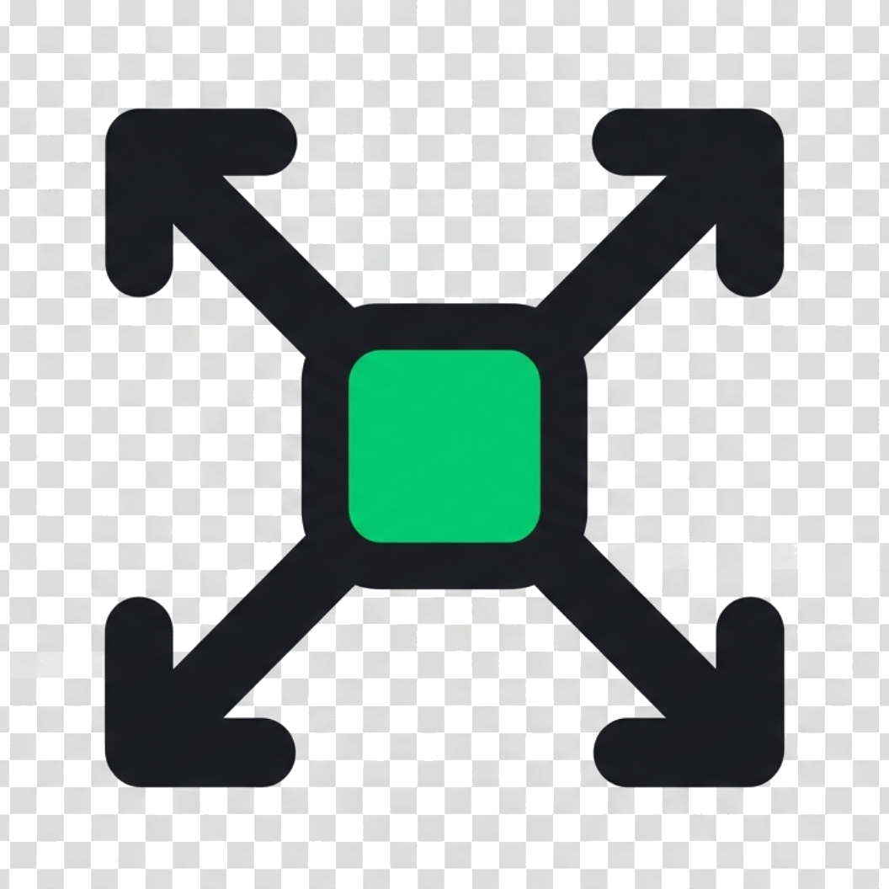
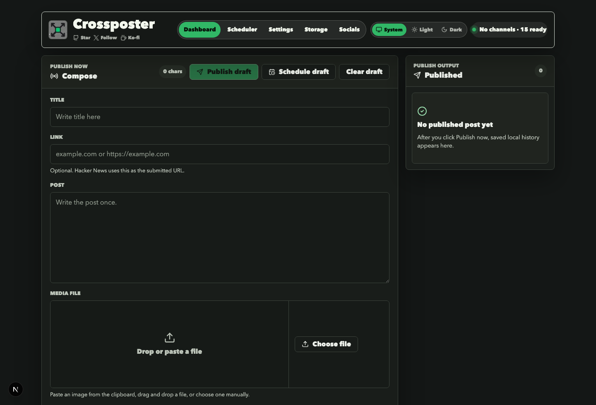

Compose once
Write a title, link, body, and media in one focused dashboard composer.

CrossposterLocal-first social publishing
Compose once, attach media, publish now, or schedule posts from a local/self-hosted server you control.

Crossposter is a local Next app with a static docs site in this
web/ folder. The publishing dashboard runs at
http://localhost:2004.
npm install
cp .env.example .env
npm run dev:localWrite a title, link, body, and media in one focused dashboard composer.
Choose active accounts across platforms without editing env files every time.
See warnings only when selected providers would reject text or media.
Send immediately or queue scheduled posts from the running local server.
LinkedIn and Dribbble use OAuth. Bluesky, Mastodon, Dev.to, and Nostr use app passwords, access tokens, or local keys.
X, Instagram, YouTube, Pinterest, Peerlist, and Hacker News use local cookies, sessions, tools, or normal submit flows.
Provider profiles are saved in poster.config.local.json, with active profile selection managed in Settings.
| Provider | Title | Post | Media |
|---|---|---|---|
| X / Twitter | Post text | 280 or 25,000 Premium | 5 MB photo, 15 MB GIF, 512 MB or 16 GB video |
| Post text | 3,000 chars | Images and MP4 up to 500 MB | |
| Bluesky | Post text | 300 chars | Images up to 1 MB |
| Caption | 2,200 chars | 8 MB image, 300 MB video | |
| YouTube | 100 chars | 5,000 char description | Video up to 256 GB or 12 hours |
| Dev.to | 128 non-space chars | 800 KB body | Local media ignored |
| 100 chars | 800 char description | 20 MB image, 100 MB video | |
| Peerlist | 120 chars | 2,000 chars | 15 MB image/GIF |
| Hacker News | 80 chars | Optional text | Local media ignored |
| Dribbble | Required | Description | 400x300 or 800x600, up to 8 MB |
Convert images to JPG with quality, target size, and estimated output size controls.
Transcode supported video to MP4 when that can satisfy a selected platform.
Crop non-GIF images to Dribbble's required 400x300 or 800x600 shot sizes.
poster.config.local.json private.POSTER_REQUIRE_ADMIN_PASSWORD=true before public hosting.Effective date: June 4, 2026
Crossposter stores credentials, titles, links, draft text, media, scheduled posts, and publish history in your local or self-hosted environment.
Content is sent only to the social platforms selected during publishing. This website uses no analytics pixels or tracking cookies.
Use Crossposter only with accounts you control. You are responsible for platform rules, API terms, automation rules, and content policies.